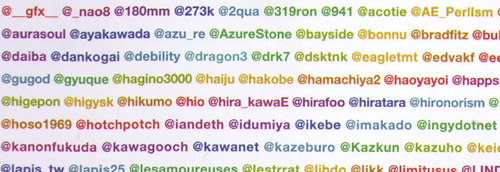

Japanese Engineering Culture
GX::ASIA 2014
Kazuhiro Homma (@kazuph)
ME

- Kazuhiro Homma
- kazuph (Please, google! Follow Me!)
I am
- Web Engineer
- Smart Phone Application Engineer
- Ops Engineer
- CPAN Author
- YAPC::ASIA 2013 Presentator
I made
- Base of community site (from scratch)
- Diet community site and App (iPhone/Android)
- Blog service for business
- Matching Service (Now!)
Thanks to this Experience,
I can write...
Perl
Java
Objective-C
Ruby
Now, I am Studying...
- Docker
- Serf
- Ansible
- Golang
My favorite
Vim!
Today
Japanese Engineer Culture
3 topics
1. The Engineer Community
2. The Famous Thing ;)
1. The Engineer Community
very dense
tightly-coupled
also called familiarity
Famous Engineers

They twitter each other,
during work.
I can get
the up-to-date information
very easily!
during work.
2. The Famous Thing ;)
This is
Miyagawa's Podcast
Miyagawa's Podcast
- Miyagawa is one of the most famous Engineers in Japan
- He Started Podcast from a year ago
- He talk about
- the up-to-date information
- his experience for 20 years
- his co-worker (He live in US)
English Podcast is a lot
Tech Info by English is shared faster then by Japan
Very Useful!
Summary
- 1. Twitter is Very Convenience for aggregate information.
- 2. I Thought I'd study English hard... (Podcast is great!)